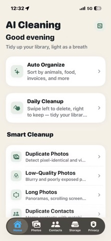

AI photo organizer for iPhone
Organize iPhone photos in 5 steps.
Start with Apple Photos search and albums, or follow the five-step AI Cleaning workflow. Its nine AI categories require Pro; review important photos before any cleanup.

Start with Photos
Organize photos without installing another app.
Use the built-in Photos app to find related pictures and group the ones you want to keep. Adding photos to an album organizes your view; it does not clear storage.
Need the app's nine categories? Continue to the five-step Pro classification workflow. For storage recovery, use the free iPhone cleanup steps.
Open Photos and use Search with a date, location, or person you have named. Start with one trip or event and review the results. Search results are a starting point, not a complete inventory of every relevant photo.
Open a photo or video, tap More, choose Add to Album, and select the album you want. Repeat with the items you want together. Labels and control positions vary by iOS version.
Check that the album contains what you need. Removing an item from an album keeps it in the library; deleting it from the library is a different action. Follow the duplicate merge instructions if you want to review repeated items.
Apple instructions: search photos and add or remove album items. These steps do not require an AI Cleaning subscription.
Step by step
How to Organize iPhone Photos with AI in 5 Steps
Use this practical workflow, then review the detailed guidance and safeguards below.
Install the app if you need its review workflow. Nine AI classification categories require Pro; a free download does not unlock them. Check the free allowance and local subscription price before choosing.
Choose the photo access you are comfortable granting. The app can review only the photos it can access; selected-photo access does not represent your whole library.
With Pro, review the nine categories: animals, plants, food, restaurants, group photos, documents, invoices, receipts, and ID cards. Check the results rather than treating a category as a deletion recommendation.
Inspect documents, receipts, ID cards, and meaningful memories before cleanup. Keep anything you need or cannot confidently identify.
Review duplicate, blurry, screenshot, and large-media groups individually. Similar photos can contain different details. Check what will be removed before confirming any cleanup.
Choose the right organizer
Use Apple Photos first; add AI Cleaning for a cleanup workflow.
Apple Photos already organizes the library into curated collections and memories. The dedicated app adds nine task-specific categories and review groups in one cleanup path.
Decision workflow
Useful categories make review faster and less risky.
A generic gallery cleaner can push users toward deleting too quickly. A better organizer separates library understanding from deletion, so users can inspect important memories and documents before removing anything.
Animals, plants, food, restaurants, and group photos.
Documents, receipts, invoices, and ID cards need careful review before cleanup.
Duplicates, similar photos, screenshots, blurry shots, and large videos are better cleanup candidates.
For iPad-specific screenshots, document scans, camera imports, and iCloud sync checks, see the iPad photo organizer guide.
Practical answers
What to check before deleting photos.
Why classify photos before cleanup?
Classification separates valuable photo groups from likely cleanup groups, reducing the chance that users delete documents, receipts, ID cards, or meaningful memories by mistake.
What makes AI Cleaning different from a generic cleaner?
AI Cleaning positions smart classification as the first step, then connects it with duplicate review, screenshot cleanup, blurry photo review, and storage analysis.
Where should duplicate cleanup start?
Start with visually similar or exact duplicate groups, then review context before deleting. See the duplicate photo cleaner guide.
Does the iPhone Photos app already organize photos?
Yes. Apple Photos provides curated collections, memories, search, People and Pets, and a Duplicates album. A dedicated organizer can add a task-specific classification and cleanup workflow.
Which nine AI photo categories does AI Cleaning use?
Its optional Pro classification groups photos into animals, plants, food, restaurants, group photos, documents, invoices, receipts, and ID cards.
Is AI Cleaning free?
AI Cleaning is free to download. Nine AI classification categories require Pro. Free users get one successful in-app cleanup action across eligible tools, not one per screen; it can include multiple selected items. Further gated cleanup actions require Pro. Check your local App Store for current subscription prices.
Does AI Cleaning upload photos for classification?
The developer says photo analysis runs on the iPhone and nothing is uploaded. The App Store privacy label reports Data Not Collected; Apple notes that this disclosure is developer-provided and has not been verified by Apple.